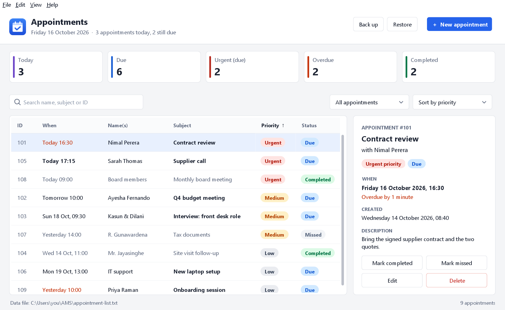
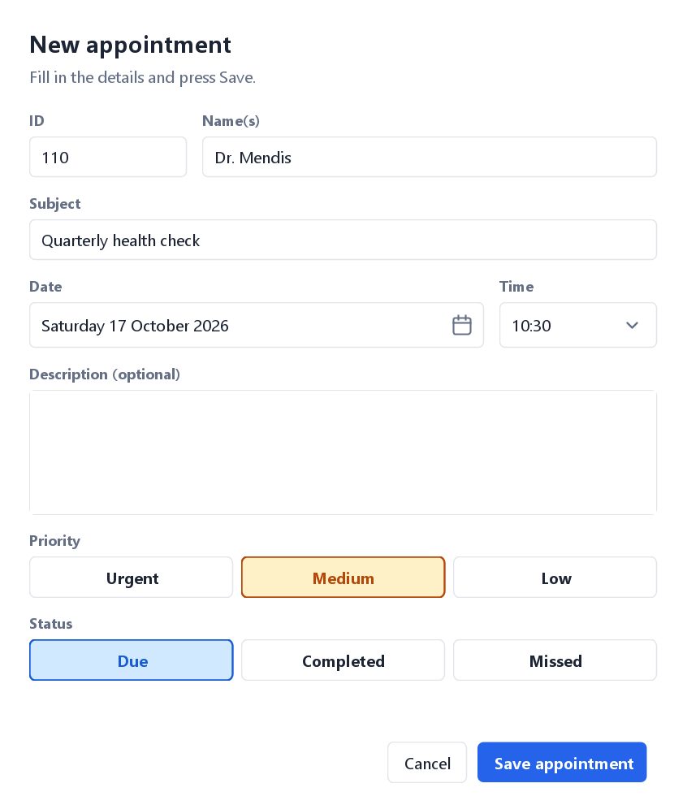

Windows
Windows 10 and 11, 64-bit
- Java is included, nothing else to install
- Double-click Install AMOffline: it's added to the Start menu and desktop
- No administrator rights needed
AMOffline-Windows.zip · — · or one command
AMOffline helps assistants, receptionists and front desks place, prioritise and track appointments. It runs on your own computer, needs no account and works without the internet.
AMOffline is a desktop app. Open this page on a Windows or Linux computer to download it.

Everything an assistant needs to keep a day of appointments under control, and nothing more.
Every appointment has a date and time. See today's list in time order, what's coming up, and what's overdue in red.
AMOffline warns you if a time is already taken or has already passed, before the appointment is saved.
Mark each appointment urgent, medium or low. Sort by priority to keep the urgent ones at the top.
Search by name, subject, ID or notes. Mark appointments completed or missed in one click.
Every change is saved straight away to a file on your computer. No account, no cloud, no internet needed.
Back up to a file and restore it on another computer. Appointments that are already there aren't duplicated.
Press New appointment or Ctrl+N, fill in who it's with and what it's about, pick a date and time, and save.

Free to use. Pick the download for your computer.
Windows 10 and 11, 64-bit
AMOffline-Windows.zip · — · or one command
Ubuntu, Debian, Mint, Fedora, Arch and others
AMOffline-Linux-x64.tar.gz · — · or one command
macOS, or any system with Java
java -jar AMOffline.jarAMOffline.jar · —
One step on each system. Your appointments are saved in an AMOffline folder in your home folder.
Get AMOffline-Windows.zip from above. Right-click it in your Downloads folder and choose Extract All…, then Extract.
It's in the extracted AMOffline folder. AMOffline is added to the Start menu and the desktop, and opens straight away.
Open PowerShell from the Start menu, paste this and press Enter:
irm {site}/install.ps1 | iexIf Windows asks whether to run “Install AMOffline”, choose Run, or More info then Run anyway. AMOffline runs on the signed Java that comes with it, so it works with Smart App Control. To uninstall, go to Settings › Apps › Installed apps.
Open a terminal, paste this and press Enter. It downloads AMOffline (with Java on 64-bit PCs) and installs it:
curl -fsSL {site}/install.sh | shFind AMOffline in your applications menu, or run amoffline in a terminal.
In the folder you downloaded AMOffline-Linux-x64.tar.gz to:
tar -xzf AMOffline-Linux-x64.tar.gz
sh AMOffline/install.shNo sudo needed. AMOffline installs into your own user folders. To remove it, run sh ~/.local/share/amoffline/install.sh --uninstall. Your appointments in ~/AMOffline are kept. On ARM computers such as a Raspberry Pi, install Java 17 or newer first (for example sudo apt install openjdk-21-jre), then run the same command.
On macOS, install the free Eclipse Temurin package, or run brew install --cask temurin if you use Homebrew.
Get it from the download section above.
Double-click AMOffline.jar, or run it from a terminal:
java -jar AMOffline.jarOn macOS, if it says the app can't be opened, right-click AMOffline.jar, choose Open, then Open again.
In a folder called AMOffline in your home folder: C:\Users\<you>\AMOffline on Windows and ~/AMOffline on Linux and macOS. In the app, choose File › Open data folder to go straight there.
No. AMOffline runs entirely on your computer. Nothing is uploaded and there's nothing to sign up for.
Click Back up and save the file somewhere you can reach from the other computer, such as a USB stick. Then, on the other computer, click Restore and pick that file. Appointments with an ID that's already there are skipped, so nothing gets duplicated.
If it's still marked due, it shows as Overdue in red and appears under the Overdue count, until you mark it completed or missed. Press Ctrl+T to see just today's appointments in time order.
Priority is how important an appointment is: urgent, medium or low. Urgent ones stay at the top when sorted by priority. Status is what happened: due (still to come), completed, or missed.
On Windows, go to Settings › Apps › Installed apps, find AMOffline and choose Uninstall. On Linux, run sh ~/.local/share/amoffline/install.sh --uninstall. Either way your appointments stay in the AMOffline folder in your home folder until you delete it.
Yes. AMOffline follows your computer's light or dark setting automatically and switches as soon as you change it. To pick one yourself, choose View › Theme and then Light or Dark.
Yes, the original text-menu version is included. With Java installed, run java -cp AMOffline.jar ams.AMS. It uses the same saved appointments.